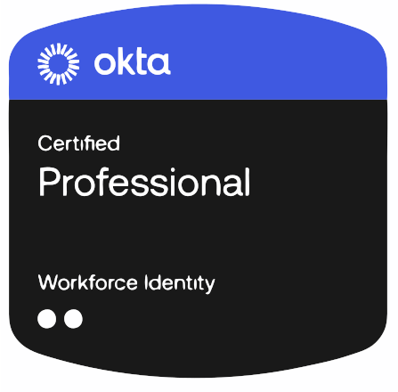
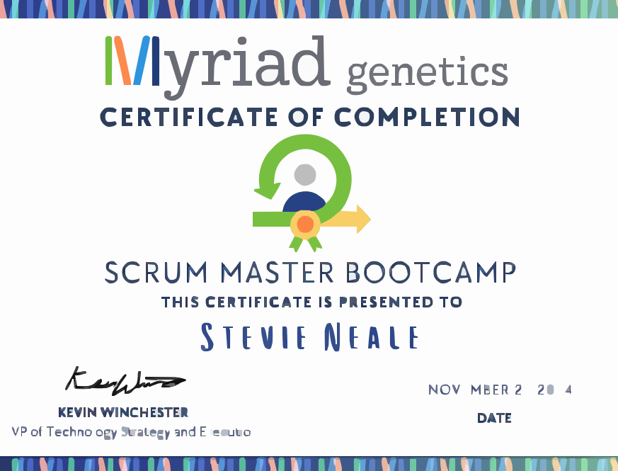

Stevie Neale
Education and Certifications
Colorado Technical University
Master of Science
GPA 3.98
Coursework: Modern Operating Systems • Computer Networking • Design and Analysis of Algorithms • Computer Systems Security Foundations • Database Systems • Systems Engineering Methods • Digital Forensics • Data Management • Software Design • Network Security • Real-Time Systems
Eastern University
Master of Arts
GPA 3.88

University of West Florida
Bachelor of Fine Arts
GPA 3.85
Coral Springs Christian Academy
High School Diploma
GPA 4.0
Certifications

Okta Certified Professional

Scrum Master Bootcamp
Microsoft Azure AZ-900

Google Cloud Digital Leader
Google IT Support
Information Technology Work Experience
Identity and Access Management Engineer (Full Resume)
- SSO & App Integration: Configure, test, and deploy standard SAML 2.0 and OIDC/OAuth 2.0 integrations for onboarding new SaaS applications.
- Operational Support & Troubleshooting: Serve as the Tier 2/3 point of contact for identity-related tickets. Deep-dive into system logs and protocol traces to resolve authentication, MFA, and provisioning failures.
- Lifecycle Management (LCM): Monitor and maintain automated user provisioning (Joiner/Mover/Leaver processes) across HRIS, Active Directory, and downstream applications. Help triage Okta Workflow errors.
- Device Assurance & Endpoint Security: Assist in configuring and monitoring Okta Device Assurance policies to ensure only secure, compliant devices can access corporate resources.
- Identity Governance & Compliance: Support user access reviews and regular entitlement certifications using Okta Identity Governance (OIG) to ensure alignment with SOC2, ISO 27001, and SOX frameworks.
Post-Graduate Work Experience
Benefits Outreach Specialist
- Screened clients meticulously to ensure the highest yield of eligible benefits and connected over 90% of customers with government and healthcare services.
- Created a 19-page User Support Reference Guide to document common technical issues for the Contact Center to streamline problem-solving, enhance efficiency, and promote autonomy among call floor employees.
- Trained 30+ onboarding employees in benefits education, technical navigation, and problem-solving skills as a volunteer training assistant.
Actor and Teaching Artist
Nonprofit Organizations: Philadelphia Young Playwrights, Musicopia, Settlement Music School, Wolf Performing Arts Center, BuildaBridge, Darlington Arts Center, The NeighborHood Center, Urban Promise
- Taught Ballroom Dance to 5th grade students in over 15 Philadelphia classrooms. 2nd place at competition!
- Led high school students and students on the Autism spectrum through the collaborative playwriting process, completing 25+ student one-acts.
- Conducted pre-school music classes for 12+ students, teaching foundational music and rhythm.
- Facilitated improv workshops for group homes, developing confidence and conflict resolution skills.
Event Coordinator
- Planned and executed 50+ events from birthday parties to Bar Mitzvahs.
- Strategically reduced event costs by 30% through vendor negotiations.
- Improved safety and compliance of event space.
- Managed a team of 7 event employees and maintained a 98% client satisfaction rate.
Singing Telegram Performer
www.classicsingingtelegram.com Need I say more?
Undergraduate Work Experience
Pensacola, Florida
Camp Music Director/Education and Outreach Intern
- Performed various administrative tasks including membership, ticket sales, organization of props and costumes, and data/research collection
- Assistant Director for "From Words to Music," "The Deaf Project," and Opera Camp
- Facilitated camp activities and final Opera performance for 20 children each session. Taught improvisation, set design, singing, and opera performance.
Receptionist
- Managed 10+ appointment calendars, processed incoming and outgoing visitors, maintained accurate inventory, and answered calls daily with 99% accuracy
- Identified and addressed inefficiencies in the client databases and appointment booking software, improving operations and communcation
Youth Minister
- Mentored 20+ youth in social, emotional, and spiritual development
- Created Sunday school and youth group curriculum, planned events and fundraisers, coordinated schedules around church and member conflicts
- Conducted interviews for Senior Pastor replacements
- Directed an all youth praise band that led Sunday morning worship
2009 Honors Thesis: The Goblin Market — "Dramaturgical Research Project on the Life of Christina Rossetti and The Goblin Market"
Musical Theatre Ensemble Director & Performer
- Wrote and received a $4,000 grant to create and direct the UWF Musical Theatre Troupe.
- Cast and directed 10 performers to tour local high schools performing and recruiting for the Musical Theatre department at UWF.
Political Science Research Study at Capital Hill
Question: “Does political science research inform political decision-making in Congress?” Our findings? No, no it does not. But no one would admit that directly.
Honors Study Abroad Course
Studied Dante Alighieri’s Inferno where it was written.
Volunteer Experience
Board Member
Generate innovative solutions for technical advancement, fundraising improvement, and business operations.
Grocery Packer
Weekly prepared grocery drop offs for 100+ home-bound families and individuals.
Traveling Teaching Artist
Traveled to Guatemala and Colombia as the Drama/Improv teacher for Art Camp, a week-long camp focused on trauma-informed art making in suffering communities. Trained 20+ indigenous artists and demonstrated the Safe Spaces Model in real-time.
Team Leader
Mission Year was a national urban service program, similar to City Year, dedicated to volunteering a year in some of the most neglected neighborhoods in the United States.
- Managed the calendar of a 6 member team, including volunteer hours, household responsibilities, and organizational obligations.
- Navigated team conflict with patience and curiosity, creating space for emotional safety and deeper connection.
- Volunteered as a teaching assistant at Christus Academy High School, tutoring in Math, English, Spanish, and Computer skills for 9th and 10th grade students.
- Classroom supervisor for the STARS After School program with Washington Elementary.
- Recreational Leader for STARS summer reading program.
Counselor/Stage Manager
Children's theatre Camp Counselor and child wrangler of 80+ campers. Also mopped and taught acting.